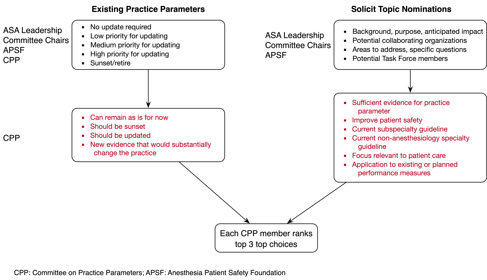
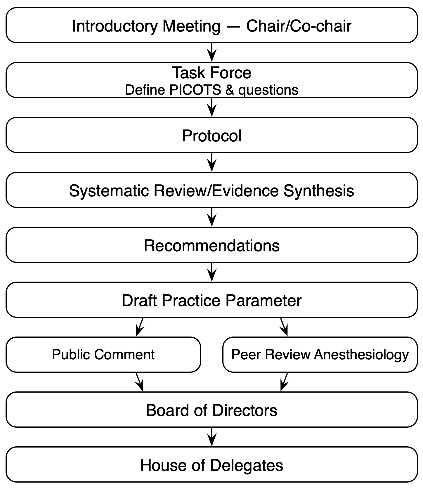

2 Organization of the ASA Practice Parameter Enterprise
2.1 Committee on Practice Parameters
The Committee on Practice Parameters (CPP) oversees the development of practice parameters, including topic prioritization, reviewing and approving drafts, developing relevant policies (eg, conflict of interest), and evaluating guidelines from other organizations for endorsement1 or affirmation of value2. CPP members are self-appointed and include six active ASA members representing geographically diverse areas, adjunct member(s), and ex officio members from four quality-focused ASA committees. The chair, self-appointed with the ASA president’s approval, is responsible for directing and coordinating all committee activities.
2.2 Task Forces
Following a decision to develop a new practice parameter or revise an existing one, the CPP chair forms a task force. A chair (and optional co-chair) leads the task force that includes the CPP chair, clinicians, a librarian/information specialist, patient representative(s), and methodologists. The clinician members are selected based on subject-matter expertise, guideline development and review methodology experience, potential conflicts, and practice diversity. To minimize potential bias across the task force, membership selection strives for diversity in sex, gender, race, ethnicity, practice environment, area of expertise, and geographic region. The task force chair, co-chairs, and CPP chair oversee the scope of the practice parameter, adhering to timelines and ASA methodology.
2.3 Conflict of Interest
Task force members disclose all personal and immediate household member3 relationships with industry and other entities that might pose a potential conflict of interest. Disclosures cover the 3 years prior to the first task force meeting and occur annually through the year following practice parameter publication. Task force members are asked to avoid, as much as possible, changes in potential conflicts of interest from the time of appointment to the publication. They must verbally disclose any relevant relationships at the beginning of all conference calls and meetings. Employees of industry, part- or full-time, are prohibited from serving on a task force.
A task force member has a relevant relationship which is considered a conflict of interest when:
The relationship or interest relates to the same or similar subject matter, intellectual property, asset, topic, or issue addressed by the task force.
The company/entity with whom the relationship exists makes a drug, drug class, or device addressed by the task force makes a drug or device that competes for use with a product addressed by the task force.
The person or household member has a reasonable possibility of financial, professional, or other personal gains as a result of the issues or content addressed by the task force — and is judged to create a risk that a relationship will unduly influence a person’s judgment.
Chairs and co-chairs must be free of conflicts of interest, and at least half of the entire task force (chair, co-chair, other members). Task force members without conflicts of interest participate in discussions, drafting, and voting on recommendations. In contrast, conflicted members participate in discussions and drafting but are recused from voting on recommendations related to those conflicts.
The entire disclosure policy can be viewed here.
2.4 Practice Parameter Nomination and Prioritization
The process of determining practice parameters to update or develop is outlined in Figure fig-prioritization. Existing practice parameters are prioritized annually for updating by ASA leadership, APSF, committee chairs, and CPP members. Topic nominations are solicited from ASA leadership, committee chairs, and APSF in a standardized format. Nominations for new practice parameters are also accepted from other individuals at any time (sent to the CPP chair or submitted through Standards, Statements, Clinical Resources).
Applying evaluation criteria (separate criteria for updating practice parameters and new topics) developed by CPP members, the committee next reviews potential practice parameter updates given the prioritization survey results and new topic nominations. In a final survey conducted following the meeting, each CPP member ranks four top choices.

CPP: Committee on Practice Parameters; APSF: Anesthesia Patient Safety Foundation.
2.5 Process
Figure fig-process outlines the practice parameter development process. An introductory meeting serves to orient the task force chairs and co-chairs to the process, timeline, and the roles of methodologists. Subsequent task force meetings are then devoted to defining the PICOs (populations, interventions, comparators, and outcomes) and key questions questions. A protocol is then drafted by the methodologists and reviewed by the task force 2 to 4 weeks later. The systematic review and evidence synthesis is then conducted, during which time the task force is convened as needed for input and decisions concerning any issues that arise including modifications to the protocol. The methodologists complete the evidence synthesis to inform recommendations. Finally, the practice parameter is drafted, submitted to Anesthesiology for review, public comment is solicited, followed by submission to the ASA Board of Directors for approval and finally the House of Delegates.

PICO: populations, interventions, comparators, and outcomes.
| Date | Modification | Version | Note |
|---|---|---|---|
| 2022-10-04 | Initial | 0.1 | First version |
The document generally satisfies ASA’s guideline development requirements, and there is general agreement with all recommendations in the document.↩︎
Guideline or practice parameter has merit and value but does not generally satisfy ASA’s guideline development requirements, or there is no general agreement with all recommendations in the document.↩︎
Partner with whom participant has lived for ≥ 1 year in the same home. Dependent or any other related person (by blood or marriage) with whom participant has lived for ≥1 year in the same home.↩︎